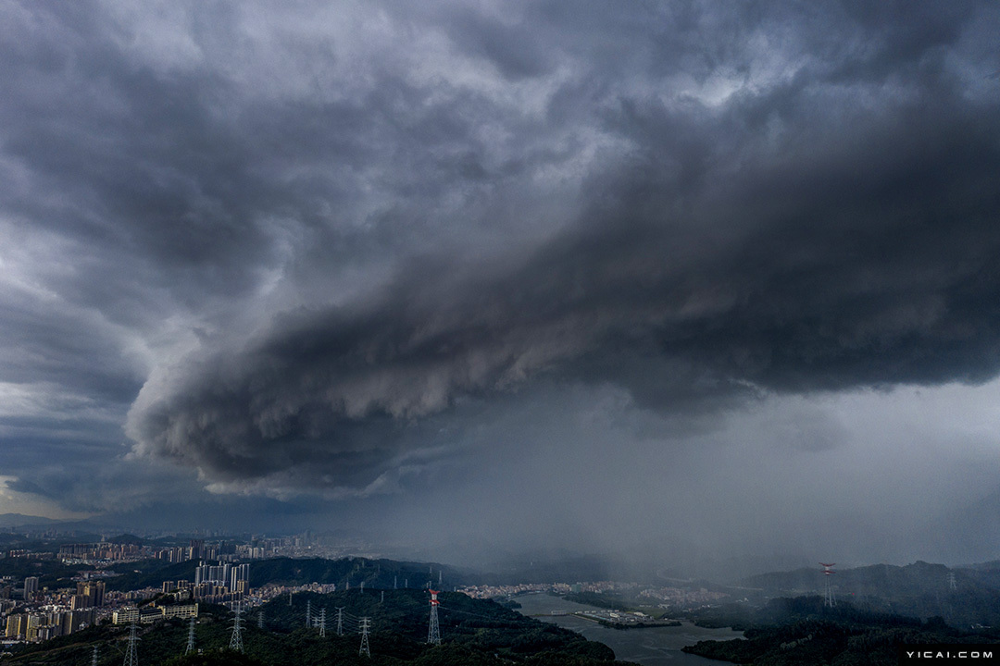

首先，我要说，我并不想评论谁对谁错。因为，那毫无意义。
其中一定有许多事情我可能不了解，影响判断。 另外，我的结论，并不能改变什么。
相对于中国庞大的网络规模与数量，国内的网络安全可以说世界二流，甚至三流。
 这与国内网络发展的迅速、国内经济飞速发展下的畸形等都有着很大关系。 诸多方面造成国内网络安全整体从技术到意识都有着许多的欠缺。 当然，我并不是说国内的黑客技术差，我说的是整体。 国内也涌现过许多如lion等人的顶尖黑客，可惜他们当中许多人后来都由于大环境的影响而渐渐退出人们的视野。 （在这里，请大家注意黑客hacker，与骇客cracker的区别。可以自行百度） 我曾经在一些如红客联盟等黑客论坛待过，给我留下影响很深的两点。 第一点就是许多，或者说非常多的新人在入门时要么一心关注腾讯门下产品的非通用Bug。 比如问如何通过IE来查看一些人QQ空间的密码相册内容。第二点就是工具。 不可否认，黑客工具可以有效减少黑客工作量。 但是如果只会懂得傻瓜式地使用黑客工具，如何带来能力上的提高。 这等于变相地阻拦了一批也许可能成为优秀黑客的道路。 再说说普通民众。在大学期间，几乎所有同学都只是在自己电脑上安装了360或者金山毒霸，然后完事了。 他们不知道自己电脑到底什么情况。 他们只有在电脑很卡的时候，点击一下安全软件的自动清理和杀毒功能。 再不行，就直接送去维修。而维修的人水平更是大多是low货级，起码软件上。 维修人员基本就是有事没事，先重装个系统试试。 许多同学连如何自己关闭自启动都不会。 好吧，说的有点远了。 我只是想说，从黑客新人到普罗大众，对网络安全都存在极大隐患问题。 所以，我们需要一个类似乌云网的存在。有人说，如果有人利用乌云网公布的漏洞滋事，怎么办呢？ 相关的体系、制度需要明确化。 乌云网既然走出了黑，那么就必须确定自身哪部分是黑，哪部分是白。不可否认，乌云网这样的网站注定是无法全白的。全白的话，提供漏洞的黑客就会极大地缩水。因为他们会缺少安全感。乌云网应当明确自身体系，制度。与此同时，社会更应该积极地交流、沟通，一同建立起一个明确的漏洞提交、通知、公布的流程。 举一个例子，曾经有人发现淘宝的漏洞后，提交给了淘宝官方。官方不予理睬后，提交到乌云网公布。这造成事后有人利用该漏洞，造成一位顾客的五万元的损失。有人把这个问题归咎于乌云网。这我就不得不说，这是淘宝工作人员自己作死，怪得了谁。好吧，我们还是素质点比较好。有一个人评论得好，“我们不可能都蒙上眼睛过日子”。无论乌云网是否公布那些漏洞，那些漏洞都在那里。在乌云网的漏洞公布流程上，厂家有着五天的预留时间。但是，许多厂家都不在意。 所以说，我们需要类似乌云网的存在，并且在保留其自身隐私的同时，建立规范的流程，引起广大重视。 另外，乌云网这样的存在由于其隐私性，所以无法政府介入。无政府介入，乌云网的提醒又缺乏足够的警醒。 那么乌云网又该何去何从呢？是就此和政府合作，彻底转白。还是时候在暗网里，彻底转黑。又或者找到自身的真正出路呢？ 看着乌云网挂出的通知，网站却又没有彻底被封。也许峰回路转也不一定。 我们需要类似乌云网的存在。因为漏洞一直都在那儿。